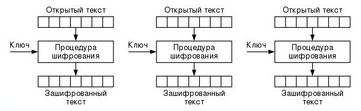
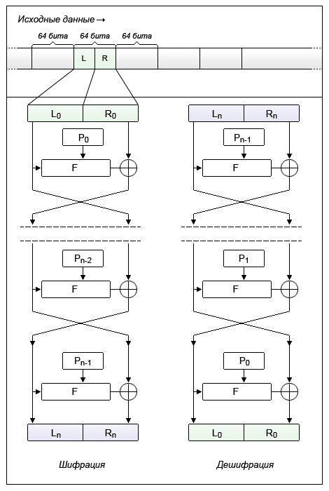
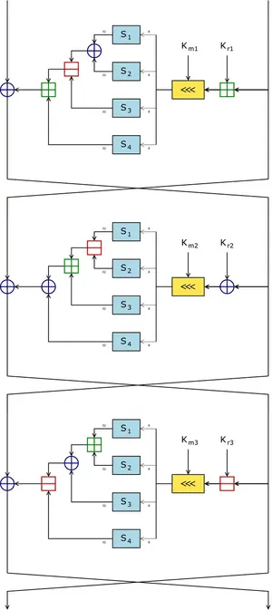
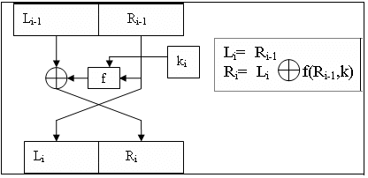

Алгоритм

- Сообщение разбивается на блоки одинакового размера. При необходимости последний блок дополняется до стандартной длины 128 бит.
- Шифрование очередного блока сообщения выполняется с использованием предыдущего зашифрованного блока. Для первого блока предыдущего зашифрованного блока не существует, поэтому его шифруют с использованием «вектора инициализации» (initialization vector, IV).
- Вектор инициализации — случайное число. Размер (длина) IV равна размеру блока.
- Расшифровка выполняется с использованием тех же ключа k и вектора инициализации IV.

- Исходные данные разбиваются на блоки фиксированной длины (как правило кратно степени двойки — 64 бит, 128 бит). В случае если длина блока исходных данных меньше длины разрядности шифра, то блок дополняется каким-либо заранее известным образом.
- Блок делится на два равных подблока — «левый» L0 и «правый» R0. В случае 64-битной разрядности — на два блока с длиной 32 бита каждый.
- «Левый подблок» L0 видоизменяется функцией итерации F(L0, P0) в зависимости от ключа P0, после чего он складывается по модулю 2 (XOR) с «правым подблоком» R0.
- Результат сложения присваивается новому левому подблоку L1, который становится левой половиной входных данных для следующего раунда, а «левый подблок» L0 присваивается без изменений новому правому подблоку R1, который становится правой половиной.
- Эта операция повторяется n-1 раз, при этом при переходе от одного этапа к другому меняются раундовые ключи (P0, P1, P2 и т.д.), где n — количество раундов для используемого алгоритма.

- (развертка ключа) составляет 16 пар подключей {Kmi, Kri} полученных из K (см. разделы Пары раундовых ключей и Неидентичные раунды).
- (L0, R0) <- (m1. .. m64). (Разделяет текст на левую и правую 32-битные половины L0 = m1 ... m32 и R0 = m33 ... m64).
- (16 раундов) for i from 1 to 16, вычислить Li и Ri следующим образом: Li = Ri-1; Ri = Li-1 ^ F(Ri-1,Kmi,Kri), где F определена в разделе «Пары раундовых ключей» (F имеет тип 1, тип 2, тип 3 или, в зависимости от i).
- c1 ... c64 <- (R16, L16). (Меняем окончательные блоки местами L16, R16 и объединяем, чтобы сформировать зашифрованный текст.)

- довести исходное сообщение до такого размера (в битах), чтобы оно нацело делилось на размер блока (sizeOfBlock = 128 бит);
- разделить исходное сообщение на блоки;
- довести длину ключа до длины половины блока;
- перевести ключ в бинарный формат (в нули и единицы);
- провести над каждым блоком прямое преобразование сетью Фейстеля в течении 16-ти раундов. После каждого раунда необходимо выполнять циклический сдвиг ключа на заданное количество символов;
- соединить все блоки вместе; таким образом получим сообщение, зашифрованное алгоритмом DES.